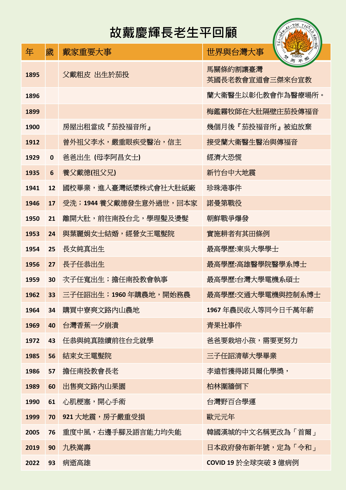

故戴慶輝長老
追思禮拜
2月19日(六)10:30
於德生教會 高雄市新興區德生街54號
生1929.12.18 歿2022.2.1
追思影片
偉大的爸爸
90歲生日慶
目錄
故人略歷
女 戴純真
慶輝長老於主後1929年12月18日，誕生於台中霧峰庄尖後小村落，一個田產豐富的信主務農家庭，父親戴粗皮，母親李阿昌，育有五男五女共10人，慶輝排行第五。因二伯父戴德膝下無子，於6歲時過繼登記為養子，瞬間割捨原生家庭親情，入籍大肚鄉龍東村茄投，12歲養父戴德因農務時不慎跌落山谷身亡，慶輝即離開未信主的養父母家，重回親生父母親懷抱，重享天倫之樂！
24歲經由南投教會陳梓和長老介紹，和主內葉和、陳審夫婦的長女麗娟姐妹結婚，旋即租屋開設「女王電髮院」，白手起家，蒙上帝賜福，生意興旺，麗娟婚後認真學習電髮技術，資質聰慧，迅速地成為廣受佳評的專業美髮師，兼顧家庭和工作，勤儉持家，展現強韌生命力，夫婦二人同心協力共組和樂基督化家庭，共育有三男一女，純眞和任恭、任寬、任詔。
慶輝長老夫婦極重視子女教育栽培，感謝上帝恩典，四人均陸續順利完成學業，並服務於醫療、科技、教育和公職等各領域，敬業樂群，貢獻所學和才能於社會，且熱心教會服事，分屬於高雄德生教會、台北南門教會、新竹公園教會和新營新生教會，恪遵慶輝長老的身教言教：「敬畏上帝，靠主得勝，榮耀主名」，實為「至於我和我家，我們必定事奉耶和華。」（約書亞記24：15）的最佳寫照！
慶輝長老信仰之路，始於龍井國小畢業後，於日本製糖公司所屬的台灣紙漿株式會社大肚場任職技術工人，在大肚教會聚會，17歲由呂春長牧師施洗歸主名下；也認識了主內同事鄭漢堆（台北市第一教會長老）和謝穎男（曾任台神院長），是互相照顧、屬靈好同伴；同時聘請呂牧師為漢文家教，努力學習，期能增進語文能力和信仰裝備，盡心盡力為主工作！
30歲受南投教會設立執事，57歲封立長老，71歲設立為名譽長老，曾任松年團契會長，無論是各種事工或協助喪家安葬及節期話劇…等，均隨時機動積極參與，並能勝任愉快達成任務，誠心誠意願為主用，成為蒙喜悅的器皿！長老曾任松年團契會長，無論是各種事工或協助喪家安葬及節期話劇…等，均隨時機動積極參與，並能勝任愉快達成任務，誠心誠意願為主用，成為蒙喜悅的器皿！
由於曾經風光一時的電髮行業日趨競爭薄利，為增加家庭收入，慶輝轉行務農，買下田園辛勤耕耘，新手上路諸多困難，常虛心向有經驗的農友請益，加上自我研究，並運用智慧突破，排除問題練就一身好功夫！所栽種的各種水果，都是外銷入選率最高，品質保證、賣相佳，深受肯定！其務農生涯長達約40年，充滿高山低谷有豐收也有苦難，經歷種種辛勞險象和身體折損，全蒙上帝憐憫化險為夷！「雖然行過死蔭谷，也不怕災害，因祢與我同在！」（詩篇23：4）。
61歲北上觀賞總統府閱兵儀式後，中午休息時，突呼吸困難身體不適，經送醫診斷為心肌梗塞，並轉台大醫院實行開心臟手術。
75歲重度中風，右側手腳及語言失能，經任恭安排至高醫治療，出院後即接回同住，並僱請外勞照顧，期間又數度中風，均得到最好的醫治與照顧。 在長達17年的臥病期間，親朋好友時常前往關心探視，慶輝及家人得到最大的安慰並滿心感謝；雖無法言語，卻能吟唱喜愛的聖詩，在患難中為眾子孫們禱告，祈求上帝恩手扶持和保守，平安喜樂！
2019年12月18日慶輝長老九十嵩壽，於高雄德生教會舉行感恩禮拜，親朋好友齊聚一堂，蒙上帝憐憫賜福，是人生最歡樂感謝的時刻！
2021年12月中旬慶輝長老因病住院，期間努力面對病情，經醫療團隊全力救助，於2022年2月1日清晨歸回天家，享年93歲。
慶輝長老終其一生勤奮熱情，勇敢挑戰和承擔的精神，盡其所能不辭勞苦為主做工的身影，常存你我心中！人生多采多姿又美好的仗已完成，安息主懷，永享平靜安穩！
「恩典及慈悲的確隨我到一世人，我欲永遠徛起佇耶和華的厝」(詩篇23:6)
故人大事年表
子/戴任詔
